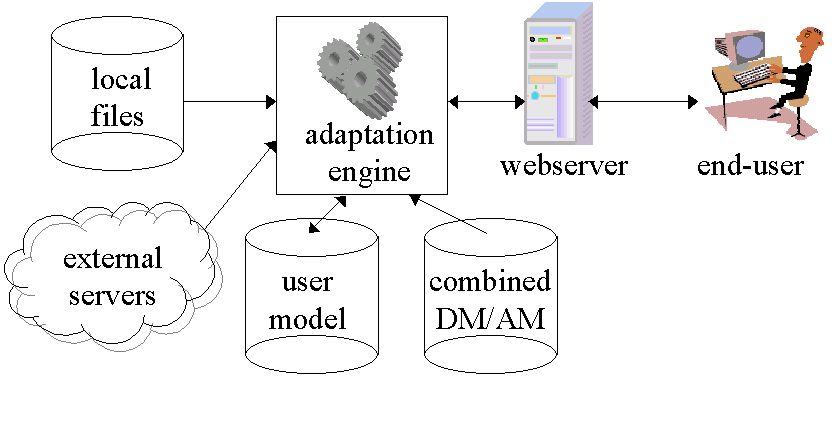

Warning: If you see this text, it means you are not viewing the page with WiBAF
Adaptation Engine
We present the overall system architecture of AHA! through this diagram.

The end-user interacts with AHA! through a browser, accessing a webserver through the http protocol. Apart from some oddities in the URLs of the visited pages, the user need not be aware that the visited website is adaptive.
The webserver uses the Java Servlet technology to activate the adaptation engine.
In the current version of AHA! the requested URL identifies a page directly. In future versions the URL may identify a concept that has to be "resolved" to a page.
The page may be local on the webserver or may refer to another webserver. For AHA! it makes no difference where the page comes from as long as its URL is known to the domain model.
In AHA! the domain- and adaptation models are combined. When the user requests a page the associated concept in the domain and adaptation model is used to start the rule execution.
The adaptation rules read and write attribute values of concepts in the user model.
When the rule engine has determined the new user model instance it starts filtering the page based on that instance. Each time a conditionally included object is encountered the rule engine also executes the rules associated with the object. These updates may influence the filtering of the remainder of the page.